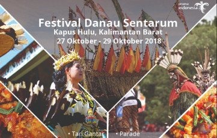
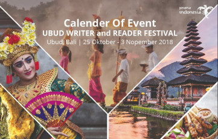
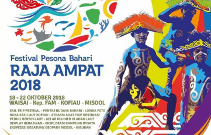
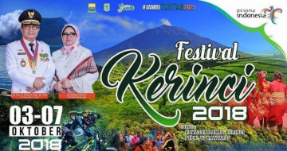

 |
Festival Danau Sentaru
Memasuki tahun penyelenggaraan yang keempat, Festival Danau Sentarum 2018 mengambil tema Memacu Ekowisata Lintas Batas di Jantung Borneo. Rangkaian Festival Danau Sentarum kali ini akan dikemas sedemikian rupa dengan memperlombakan beberapa kegiatan menarik, diantaranya Danau Sentarum Cruise, Parade Perahu Tradisional, Sentarum Ethnic Music Festival, Kontes Arwana Super Red, Karnaval Budaya, dan Festival Minum Madu. |
 |
Jakarta Marathon
Sama seperti tahun-tahun sebelumnya, Jakarta Marathon 2018 masih menargetkan peserta sebanyak 20 ribu pelari dari 50 negara serta peserta dari berbagai daerah di Indonesia. Selain itu, Jakarta Marathon diharapkan dapat memberikan dampak positif terhadap laju perekonomian dan pembangunan pariwisata Jakarta |
 |
Ubud Writers & Readers Festival
Pada acara yang digelar dari tanggal 25 Oktober - 3 November 2018, akan ada 180 lebih figur-figur mengagumkan dari 30 negara di seluruh dunia yang akan tampil dalam panggung. Mereka akan berbagi kisah, ide, dan inspirasi dalam 70 sesi panel diskusi yang akan berlokasi di venue utama, yaitu Taman Baca, Indus Restaurant, dan NEKA Museum. |
 |
Festival Pesona Bahari Raja Ampat
Pada tanggal 18 sampai 21 Oktober 2018, Festival Pesona Bahari Raja Ampat akan kembali digelar jauh lebih spektakuler. Dengan menampilkan beberapa kemegahan paling menakjubkan dari Kepulauan Raja Ampat di Provinsi Papua Barat. Acara yang luar biasa ini akan dipusatkan di Waisai, ibu kota Kabupaten Raja Ampat di Pulau Waigeo |
 |
Festival Kerinci
Setiap tahunnya, Pemerintah Provinsi Jambi rutin menggelar Festival Kerinci atau yang dulu disebut Festival Masyarakat Peduli Danau Kerinci (FMPDK). Tahun ini, acara tersebut akan digelar pada 3-7 Oktober 2018 di Kawasan Wisata Danau Kerinci, Kabupaten Kerinci, Provinsi Jambi. |